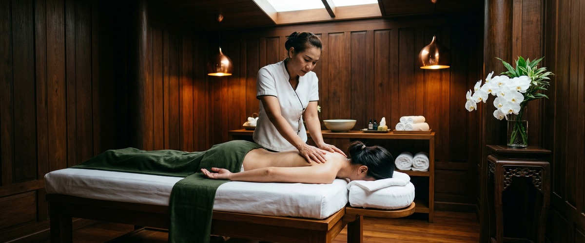
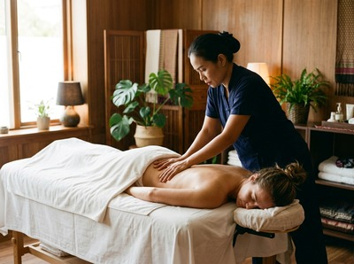

By the end of the day, your feet carry the weight of everything: hours on hard floors, long commutes, shifts spent standing, or training sessions that leave the soles burning.

Tired, aching feet are one of the most common complaints people live with needlessly. A targeted Thai foot massage can address the root causes rather than just masking the pain.
Foot pain builds up when the muscles, tendons, and tissue in the foot are loaded again and again without proper recovery. Common causes include long periods of standing, high-impact exercise, poorly fitting shoes, and conditions like plantar fasciitis and metatarsalgia, both covered in NHS foot pain guidance.

Metatarsalgia causes pain and swelling across the ball of the foot, just below the toes. It develops when pressure falls unevenly across the front of the foot.
Plantar fasciitis is an irritation of the thick band of tissue running from the heel to the toes. It produces that sharp, first-step pain many people know from getting out of bed in the morning.
Both conditions share a common thread: poor circulation, tight muscles, and built-up tension in the arch and heel that the body cannot fully release alone. Over time, adjusting your movement to ease foot pain can shift strain upward into the knees, hips, and lower back.
Massage works on tired feet in several connected ways. The pressure and kneading motions boost local blood flow, flushing out waste products and bringing fresh oxygen to tired tissue. Firm compression along the sole and arch releases the held tension that causes tightness and heel soreness.
A review published on PubMed looking at foot reflexology and fatigue found clear effects on both fatigue and pain relief across multiple studies. Thai Foot Massage works on the reflex points of the foot and lower leg, combining rhythmic pressure, thumb-walking, and assisted stretching of the toes and ankle to ease overloaded structures.
Thai Oil Massage and Traditional Thai Massage also work the calf and lower leg, where tight muscles pull directly on the heel and arch. You can book your session online and note any specific areas of discomfort so Jariya can focus the treatment where it is needed most.
At Thai Massage Greenock on South Street in Greenock, a session for tired and aching feet starts with a brief chat about your symptoms. Jariya will ask where the pain sits, what your daily demands are, and whether any areas need extra care.
Trained at Bangkok's Wat Po temple — the birthplace of traditional Thai massage — Jariya uses Thai Foot Massage and lower-leg work to address tension from the toes up through the calf. Pressure is applied along reflex zones and sen energy lines, while assisted stretching of the ankle and toes helps restore range of motion that tightness has reduced.
For clients with wider fatigue through the legs, Traditional Thai Massage or Thai Oil Massage can extend the treatment up through the thighs and lower back. This addresses the full chain of tension, not just the feet. Each session is shaped around what your body needs on the day, not a set script.
Retail and hospitality workers on hard floors all day, healthcare staff through long shifts, and runners or cyclists training for distance events all see strong results. New parents spending hours carrying and lifting respond well too, as do office workers whose footwear catches up with them on the commute.
If your feet rarely feel fully rested, that is a sign the problem has become chronic. A single session is a good place to start.
Massage can ease plantar fasciitis symptoms by improving circulation to the inflamed tissue. It also releases tension in the calf and arch muscles, and reduces the tightness behind that sharp morning pain.
It is not a cure for the underlying condition. But regular treatment alongside stretching and proper footwear can make a real difference to daily comfort. Always tell your therapist if you have a diagnosis so the pressure and technique can be adjusted.
For people with ongoing foot fatigue from work or activity, a session every two to three weeks tends to give the best results. This gap lets the muscles and tissue benefit from each treatment before tension fully rebuilds.
One-off sessions help, but regular appointments mean the improvement carries over rather than resetting each time.
They share similar ideas, but are not the same. Thai Foot Massage uses reflexology-based pressure on the reflex points of the foot, and also includes assisted stretching of the toes and ankle, thumb-walking along the sole, and work on the lower leg up to the knee.
Traditional reflexology focuses more closely on the reflex map of the foot alone. Thai Foot Massage tends to address physical fatigue and muscle tension more directly as a result.
Yes. Foot fatigue from long periods of standing or walking is one of the most common reasons people book a Thai Foot Massage. Better circulation, released muscle tension, and relief for the arch and heel all target the strain that builds across a working day.
Many clients feel the benefit after the first session. With regular treatment, feet tend to recover more quickly between shifts.
Gentle massage supports lymphatic drainage and improves blood flow back up the legs. This can reduce mild swelling linked to prolonged standing and helps move fluid that has pooled in the lower legs and feet during the day.
If your swelling is severe, ongoing, or has no clear cause, speak to your GP first to rule out any underlying circulatory issue before booking.
You can book your appointment online via the booking form on the Thai Massage Greenock website. Sessions are available at 0/2 16 South Street, Greenock, PA16 8UE.
If you have specific foot complaints or questions before booking, you can also get in touch by calling 01475 600868 or emailing kmmsubs@gmail.com.